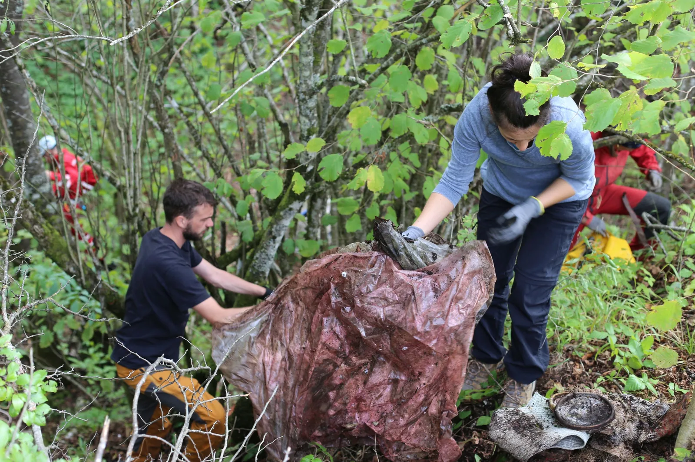

Odsječka akcija čišćenja podzemlja
Prošlog vikenda udruženi Velebitaši/ce iz svih odsjeka (speleološki, alpinistički i planinarski) čistili su smeće iz četiri onečišćena objekta na području NP Plitvička jezera. Najveća količina smeća nalazila se u jami…

Gorana Perić
Prošlog vikenda udruženi Velebitaši/ce iz svih odsjeka (speleološki, alpinistički i planinarski) čistili su smeće iz četiri onečišćena objekta na području NP Plitvička jezera – od toga 3 jame i 1 špilja. Najveća količina smeća nalazila se u jami prikladnog naziva 'Kanta ispod ceste', gdje se 'smetlarskom arheologijom' došlo do slojeva smeća starog preko 50 godina – bilo je tu starih šporeta, posuđa, dijelova automobila, frižidera, televizora, kreveta, madraca, stiropora, antiknih igračaka, odjeće kakvu su u svojoj mladosti furale naše bake, i najzanimljivije od svega – gomila krumpira! Truli krumpiri u plastičnim vrećama učinili su ovu akciju posebno smrdljivom, a interesantno je kako su pustili korijenje te smo na dubinama od preko jedan metar iskopavali mlade krumpire. Gomila smeća nalazila se i u vrtači pored jame, a naše nozdrve posebno je oduševila gomila trulih veprova.
U akciji koja je trajala cijeli dan izvučeno je 11,5 kubika otpada, a po našoj procjeni u jami ima smeća za barem još jedan dan čišćenja. Posao je dodatno otežala činjenica da je kroz otvor jame godinama kontinuirano upadao humus i lišće te se skupa s otpadom dekompostirao u jednu vrlo zanimljivu smjesu.
Za vrijeme akcije prišla nam je jedna starija gospođa, stanovnica obližnjeg naselja, koja nam je ispričala kako su svi u selu oduvijek bacali otpad u jame, pogotovo u vrijeme kada komunalno gospodarstvo nije bilo uređeno, a svijest o štetnosti zagađenja okoliša još nije postojala. Objasnili smo gospođi kako otpad u jamama direktno ugrožava prirodne rezervoare pitke vode, i kako na kraju sve što se u jame deponira završi u čaši vode koju pijemo. Ovo nam opet iznova ukazuje na to da je najvažniji zadatak upravo edukacija lokalnog stanovništva, jer uzalud mi čistimo jame ako će za godinu dana one opet biti pune smeća!
Akcija je izvedena u sklopu inicijative 'Čisto podzemlje' uz donatorsku podršku Lidl Hrvatska, a logističku potporu pružili su rangeri iz NP Plitvička jezera koji su svojim terencem prevozili smeće od onečišćenih objekata do kontejnera, te načelnik općine Saborsko i komunalci koji su dovezli kontejner i organizirali odvoz smeća. Od srca vam hvala!
Više o projektu na: https://cistopodzemlje.info/hr/